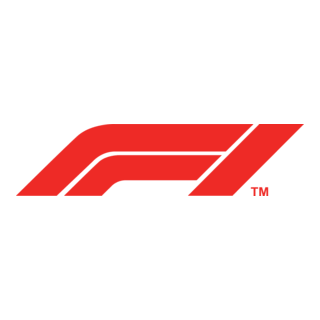
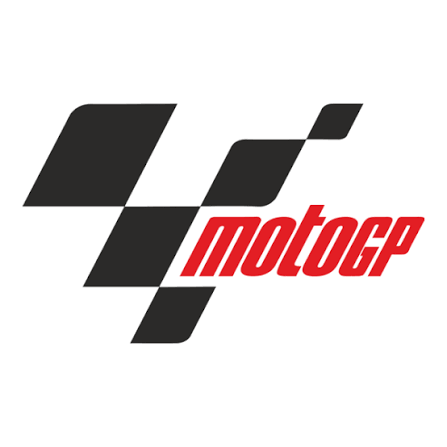

iPhone / iPad
- Tocca uno dei pulsanti webcal.
- Conferma “Sottoscrivi”.
- Apri i dettagli e disattiva “Rimuovi avvisi”.


Tre calendari iCalendar sottoscrivibili che si aggiornano automaticamente. Orari verificati, stato delle sessioni e copertura TV per Austria e Italia.
https://dizzle0987.github.io/motorsport-calendar/calendar.icshttps://dizzle0987.github.io/motorsport-calendar/f1.icshttps://dizzle0987.github.io/motorsport-calendar/motogp.icsLa sottoscrizione continua a ricevere gli aggiornamenti. Scaricare e importare il file una sola volta crea invece una copia statica.
Ogni evento riporta fonte sportiva, fonte dell’orario e tipo di trasmissione. Una differita TV8 non viene indicata come diretta. Se il palinsesto della singola sessione non è pubblicato, compare “Da confermare”. I servizi streaming possono avere limitazioni geografiche.